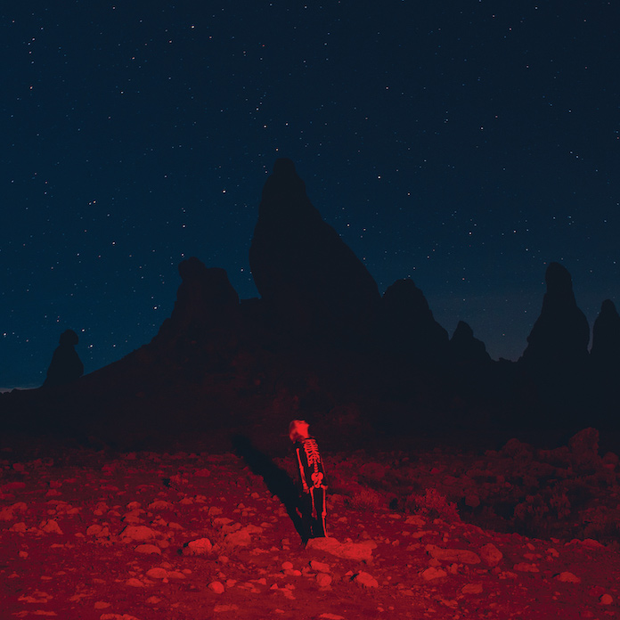

@phoebe_bridgers
Phoebe Lucille Bridgers (Pasadena, 17 de agosto de 1994) é uma cantora, compositora, guitarrista e produtora estadunidense.
Estreou com o álbum de estúdio Stranger in the Alps (2017), seguido por Punisher (2020), que lhe rendeu ampla aclamação, da crítica e do público, e quatro indicações ao Prêmio Grammy, incluindo a de Artista Revelação.
É conhecida, também, por sua participação nos grupos musicais boygenius (com Julien Baker e Lucy Dacus) e Better Oblivion Community Center (com Conor Oberst).
 Link